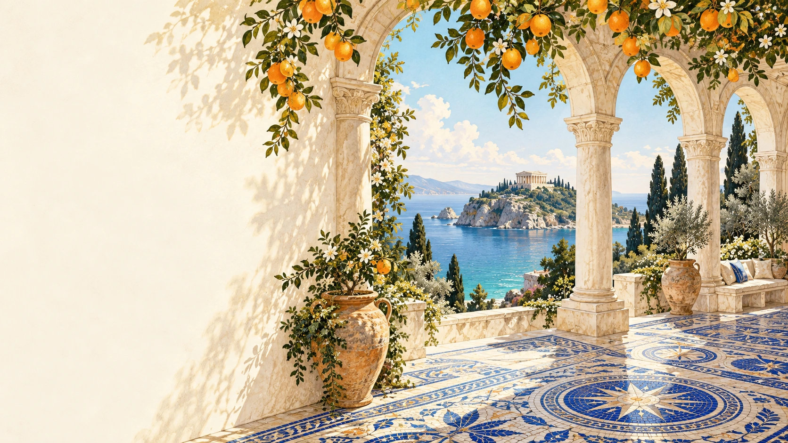

FOR THE CURIOUS & THE UNHURRIED
A JOURNEY
WORTH
TELLING.
Salt on your skin. Stories in the stone.
A little more time for the good things.
IMAGINED IN THE MEDITERRANEANSEA. STONE. SUNLIGHT.
Less itinerary.
More possibility.
There is another way to travel. A path shaped by the light, a table you don’t want to leave, a turn you take because it looks beautiful.
These illustrated escapes begin with that feeling. No fixed route. No race to see it all. Just a day worth making your own.
FOLLOW YOUR CURIOSITYMAKE ROOM FOR A DETOURSTAY FOR THE SUNSET
ONE DAY. YOUR WAY.
Where does
the day take you?
Choose a mood. We’ll offer a starting point.
LET THE WATER SET THE PACE
The blue hours.
MORNING
A quiet cove, before the world wakes.
AFTERNOON
A long lunch beside the harbour.
LAST LIGHT
A coastal path with nowhere else to be.
Save an idea for your travels. No booking or enquiry is made.
THALASSAA NOTE TO YOUR FUTURE SELF
Leave a little
space for wonder.
The best part might be the part you didn’t plan.
Imagine another day ↗